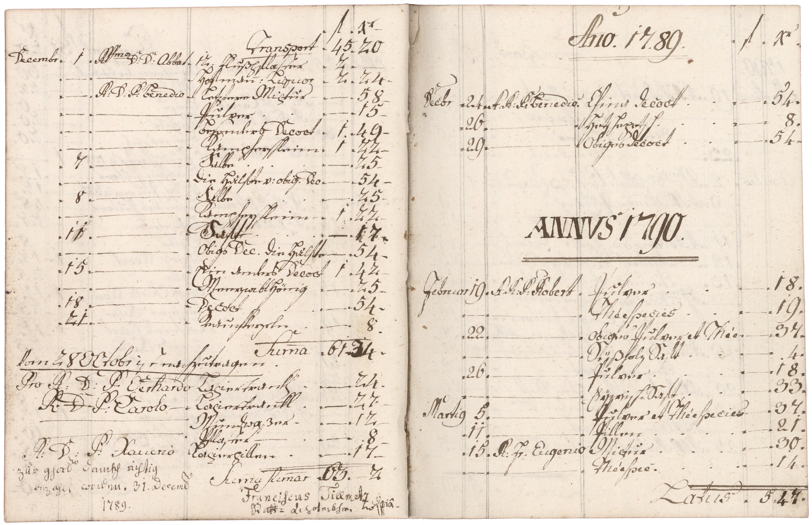

BayHStA, Kloster Fürstenzell Amtsbücher und Akten, 78, fol. 13v und 14r



Kommentar
Editor: magdalena.weileder@textgrid.de
Archiv: BayHStA
Bestand: Kloster Fürstenzell Amtsbücher und Akten
Signatur: 78, fol. 13v und 14r
Ort:
Datum: 1789 Oktober 28–1790 März 15
Schlagwort: Amtsbuch
Schwierigkeitsgrad: mittel
Kurzbetreff:
Rechnungsbuch über Medikamentenbezug
Rechnungsbuch über Medikamentenbezug
Schreiberhände:
- Schreiber des Klosters (S1)
- Stadtapotheker Franciscus Tillmetz (S2)
Kommentar:
Das Rechnungsbuch des Klosters Fürstenzell über die von der Stadtapotheke in Passau 1785–1803 bezogenen Medikamente enthält auch die Namen der jeweiligen Empfänger und gelegentlich Anwendungshinweise. Die Bezahlung der Heilmittel wurde jeweils am Jahresende durch den Stadtapotheker Franciscus Tillmetz mit eigenhändiger Unterschrift bestätigt. Unter den Arzneien waren neben meist nicht näher bestimmten Tees, Säften, Salben, Pillen, Pulvern, Mixturen und Dekokten auch wohlschmeckende Mittel wie „Hetschepetsch“ (Hagebutten), Honig oder Rosenlikör sowie Mineralwässer (Selters und „Egrischer Sauerbrunnen“). Auf der hier gezeigten Doppelseite, die Einträge über Oktober 1789–März 1790 bezogene Medikamente zeigt, werden auch Hoffmannstropfen (Z. 4: Hofman(n): Liquor) erwähnt, ein Gemisch aus Alkohol und Äther, das auch heute noch als Hausmittel bei Schwächeanfällen zur Anwendung kommt. Es ist nach seinem Erfinder, dem Mediziner Friedrich Hoffmann benannt, der sich das Mittel schon 1704 durch ein Privileg des Mainzer Kurfürsten „patentieren“ ließ.
Die Einträge enthalten viele lateinische Begriffe und Namen, die in humanistischer Kursive geschrieben werden, während für deutsche Worte Kurrent verwendet wird.
Der Schreiber des Klosters verschleift das c in sch völlig (z.B. Z. 8: Kampferschleim).
Die Striche und Punkte, die als Zeilenfüller und zur Trennung der Spalten gesetzt wurden, wurden in Entzifferung und Transkription nicht berücksichtigt, übernommen wurden dagegen die als Platzhalter für Zahlen dienenden waagrechten Striche auf der Grundlinie, die in der Entzifferung mit _ (Unterstrich), in der Transkription dem heutigen Gebrauch eher entsprechend mit – (Halbgeviertstrich) wiedergegeben werden. Aus Gründen der Darstellbarkeit wird die Unterschrift des Apothekers unterhalb der Tabelle in eigenen Zeilen wiedergegeben, obwohl sie teilweise auf derselben Höhe wie Einträge des Klosterschreibers steht.
Das Rechnungsbuch des Klosters Fürstenzell über die von der Stadtapotheke in Passau 1785–1803 bezogenen Medikamente enthält auch die Namen der jeweiligen Empfänger und gelegentlich Anwendungshinweise. Die Bezahlung der Heilmittel wurde jeweils am Jahresende durch den Stadtapotheker Franciscus Tillmetz mit eigenhändiger Unterschrift bestätigt. Unter den Arzneien waren neben meist nicht näher bestimmten Tees, Säften, Salben, Pillen, Pulvern, Mixturen und Dekokten auch wohlschmeckende Mittel wie „Hetschepetsch“ (Hagebutten), Honig oder Rosenlikör sowie Mineralwässer (Selters und „Egrischer Sauerbrunnen“). Auf der hier gezeigten Doppelseite, die Einträge über Oktober 1789–März 1790 bezogene Medikamente zeigt, werden auch Hoffmannstropfen (Z. 4: Hofman(n): Liquor) erwähnt, ein Gemisch aus Alkohol und Äther, das auch heute noch als Hausmittel bei Schwächeanfällen zur Anwendung kommt. Es ist nach seinem Erfinder, dem Mediziner Friedrich Hoffmann benannt, der sich das Mittel schon 1704 durch ein Privileg des Mainzer Kurfürsten „patentieren“ ließ.
Die Einträge enthalten viele lateinische Begriffe und Namen, die in humanistischer Kursive geschrieben werden, während für deutsche Worte Kurrent verwendet wird.
Der Schreiber des Klosters verschleift das c in sch völlig (z.B. Z. 8: Kampferschleim).
Die Striche und Punkte, die als Zeilenfüller und zur Trennung der Spalten gesetzt wurden, wurden in Entzifferung und Transkription nicht berücksichtigt, übernommen wurden dagegen die als Platzhalter für Zahlen dienenden waagrechten Striche auf der Grundlinie, die in der Entzifferung mit _ (Unterstrich), in der Transkription dem heutigen Gebrauch eher entsprechend mit – (Halbgeviertstrich) wiedergegeben werden. Aus Gründen der Darstellbarkeit wird die Unterschrift des Apothekers unterhalb der Tabelle in eigenen Zeilen wiedergegeben, obwohl sie teilweise auf derselben Höhe wie Einträge des Klosterschreibers steht.
Entzifferung
(Absatz Beginn)
20 Vom 28 OCtob(e)r(Wechsel des Schriftsystems) ist nachzutragen.
| 21 Pro R(everendo) D(omino) P(atri) Gerhardo(Wechsel des Schriftsystems) | Laxiertrankl | _ | 24 |
| 22 R(everendo) D(omino) P(atri) Carolo(Wechsel des Schriftsystems) | Laxiertrankl | _ | 27 |
| 23 | Mundwaßer | _ | 12 |
| 24 | Pflaster | _ | 8 |
| 25 R(everendo) D(omino) P(atri) Xauerio(Wechsel des Schriftsystems) | Laxierpillen | _ | 17 |
| 26 | Sum(m)a sum(m)ar(um)(Wechsel des Schriftsystems) | 63 | 2 |
27 zur ghor(sam) danckh richtig
28 bezahlt worden. 31. Decemb(er)(Wechsel des Schriftsystems)
29 1789.
30 Franciscus Tillmetz(Wechsel des Schriftsystems)
31 Statt=Apoteckher. m(anu)p(ro)pria(Wechsel des Schriftsystems)
//(Seitenumbruch)
| 32 | An(n)o(Wechsel des Schriftsystems). 17.89. | f(lorenos) | X(e)r | ||
| 33 Dec(em)b(e)r(Wechsel des Schriftsystems) | 24 | A(dmodum) R(everendo) P(atri) Benedic(to)(Wechsel des Schriftsystems) | China decoct(Wechsel des Schriftsystems) | ¬_ | 54 |
| 34 | 26 | Hetschepetsch | _ | 8 | |
| 35 | 29 | Obiges decoct(Wechsel des Schriftsystems) | _ | 54 |
36 ANNVS(Wechsel des Schriftsystems) 1790.
| 37 Februar(Wechsel des Schriftsystems) | 19 | A(dmodum) R(everendo) P(atri) Robert(Wechsel des Schriftsystems) | Pulver | _ | 18 |
| 38 | _ | Théespecies(Wechsel des Schriftsystems) | _ | 19 | |
| 39 | 22 | Obiges Pulver et Thée(Wechsel des Schriftsystems) | _ | 37 | |
| 40 | _ | Süßholz Saft | _ | 4 | |
| 41 | 26 | Pulver | _ | 18 | |
| 42 | _ | Eÿwisch=Saft | _ | 33 | |
| 43 Marti(us)(Wechsel des Schriftsystems) | 5 | Pulver et Théespecies(Wechsel des Schriftsystems) | _ | 37 | |
| 44 | 11 | Pillen | _ | 21 | |
| 45 | 15 | R(everendo) Fr(atri) Eugenio(Wechsel des Schriftsystems) | Mixtur | _ | 30 |
| 46 | _ | Théespec(ies)(Wechsel des Schriftsystems) | _ | 14 | |
| 47 | Latus(Wechsel des Schriftsystems) | 5 | 47f) |
(Absatz Ende)
a) zweite Ziffer von "11"(Textzitat) über Rasur, ursprünglich "10"(Textzitat)
b) "Saft"(Textzitat) über Rasur, ursprünglich "Decoct"(Textzitat)
c) waagrechter Strich als Platzhalter über Rasur, ursprünglich "1"(Textzitat)
d) "17"(Textzitat) über Rasur, ursprünglich "42"(Textzitat)
e) waagrechter Strich als Platzhalter gebessert zu "21"(Textzitat)
f) "47"(Textzitat) über Rasur
Transkription
(Absatz Beginn)
20 vom 28. october(Wechsel des Schriftsystems) ist nachzutragen:
| 21 pro reverendo domino patri Gerhardo(Wechsel des Schriftsystems) | laxiertrankl | – | 24 |
| 22 reverendo domino patri Carolo(Wechsel des Schriftsystems) | laxiertrankl | – | 27 |
| 23 | mundwaßer | – | 12 |
| 24 | pflaster | – | 8 |
| 25 reverendo domino patri Xaverio(Wechsel des Schriftsystems) | laxierpillen | – | 17 |
| 26 | summa summarum(Wechsel des Schriftsystems) | 63 | 2 |
27 zur ghorsam danckh richtig
28 bezahlt worden, 31. december(Wechsel des Schriftsystems)
29 1789
30 Franciscus Tillmetz(Wechsel des Schriftsystems),
31 stattapoteckher, manu propria(Wechsel des Schriftsystems)
//(Seitenumbruch)
| 32 | anno(Wechsel des Schriftsystems) 1789 | f. | x. | ||
| 33 december(Wechsel des Schriftsystems) | 24 | admodum reverendo patri Benedicto(Wechsel des Schriftsystems) | China-decoct(Wechsel des Schriftsystems) | ¬– | 54 |
| 34 | 26 | hetschepetsch | – | 8 | |
| 35 | 29 | obiges decoct(Wechsel des Schriftsystems) | – | 54 |
36 annus(Wechsel des Schriftsystems) 1790
| 37 februar(Wechsel des Schriftsystems) | 19 | admodum reverendo patri Robert(Wechsel des Schriftsystems) | pulver | – | 18 |
| 38 | – | théespecies(Wechsel des Schriftsystems) | – | 19 | |
| 39 | 22 | obiges pulver et thée(Wechsel des Schriftsystems) | – | 37 | |
| 40 | – | süßholz saft | – | 4 | |
| 41 | 26 | pulver | – | 18 | |
| 42 | – | eÿwischsaft | – | 33 | |
| 43 martius(Wechsel des Schriftsystems) | 5 | pulver et théespecies(Wechsel des Schriftsystems) | – | 37 | |
| 44 | 11 | pillen | – | 21 | |
| 45 | 15 | reverendo fratri Eugenio(Wechsel des Schriftsystems) | mixtur | – | 30 |
| 46 | – | théespecies(Wechsel des Schriftsystems) | – | 14 | |
| 47 | latus(Wechsel des Schriftsystems) | 5 | 47f) |
(Absatz Ende)
a) zweite Ziffer von "11"(Textzitat) über Rasur, ursprünglich "10"(Textzitat)
b) "saft"(Textzitat) über Rasur, ursprünglich "decoct"(Textzitat)
c) waagrechter Strich als Platzhalter über Rasur, ursprünglich "1"(Textzitat)
d) "17"(Textzitat) über Rasur, ursprünglich "42"(Textzitat)
e) waagrechter Strich als Platzhalter gebessert zu "21"(Textzitat)
f) "47"(Textzitat) über Rasur